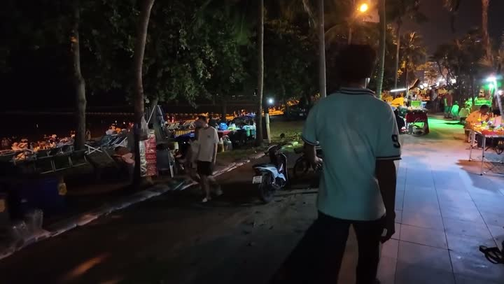

Атлас мест · Паттайя, Таиланд
Рынок Яй Мак (Yai Mak Market)

Наш отзыв
Рынок Яй Мак — наше любимое место в Паттайе для ужинов и прогулок. Здесь отличная атмосфера, хорошая музыка и вкусная еда. Особенно понравились местные смузи — красивые, насыщенные вкусом и без неприятного осадка. Курица-гриль за 180 бат тоже порадовала. Из минусов — бывает многолюдно.
Последний раз были здесь: 12 декабря 2025
Что взять — мы пробовали
- курица-гриль
- смузи
Заметка Димы: Шикарный рынок: и еда, и вещи.
Цены на 2024 год — на момент съёмки
- курица — гриль — 180 бат
Где это
12.883313999999997,100.88042589999999
Смотреть в наших роликах
РЫНОК с МАЯКОМ | Kikey Plaza and Night Market | ПАТТАЙЯ 2024
13 марта 2024 · место с 0:00 · все места ролика
Фестиваль Лой Кратонг в Паттайе, ужин на рынке с маяком (Kikey Plaza). ВЛОГ. Таиланд сезон 2025
23 ноября 2024 · место с 8:09 · все места ролика
Переезд в Паттайю: что привезли, где живём и что едим? сезон 2026
21 ноября 2025 · место с 25:04 · все места ролика
Не день, а приключение! Цены на продукты. Встреча с подписчицей, Copacobana. Отмечаем на рынке.
23 ноября 2025 · место с 29:33 · все места ролика
Райские Волны - Bang Saray Beach | Ночной рынок | Смузи почти даром | ПАТТАЙЯ
12 декабря 2025 · место с 41:24 · все места ролика
Рядом из нашего атласа
- Кафе Минск (MINSK / GREEN TOWER) — 45 м
- Кафе «Крокодил» — 185 м
- Ресторан Чули (Chulee Restaurant) — 253 м
- Зет бай Зинг (Z by Zing) — 253 м
- Массаж Нана 12 (nana 12) — 263 м
- Массаж Йим Сиам (YIM SIAM HEALTH MASSAGE) — 299 м
Атлас мест канала «Юля и Дима / БЕЗ ТОРМОЗОВ». Описания составлены по нашим роликам; цены — на момент съёмки. Нашли неточность — напишите нам в Telegram.